Camper Spec 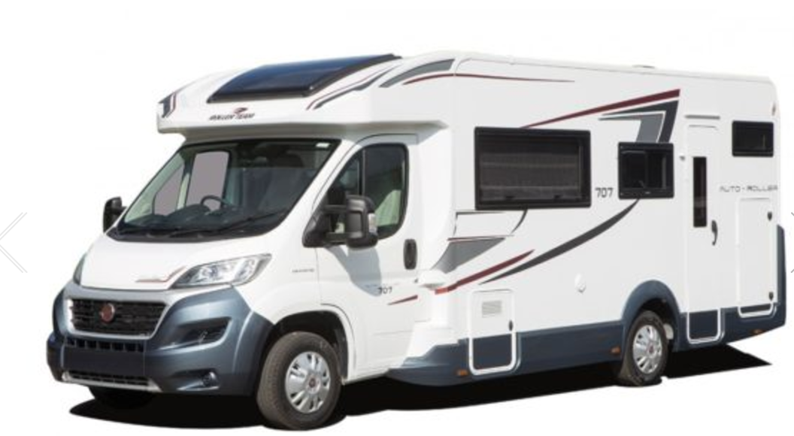
Driver Requirements / Forms
Freedhome need the following information from all 6 drivers
-
... a copy of every drivers licence
-
... can every driver fill in the LV form here
And the following from the 2 lead drivers ( Seens and Stuart )
-
The lead driver/hirer of each Lugano to sign back page of the terms & conditions here
Please note, the lead hirer/driver is the person that is ultimately responsible for the vehicle and that person
will have to be the one to provide the debit/credit card on collection today to pre-authorise the £1000 security bond.
The card must be in the hirers name.
Lugano
Lugano camper ( same as sleeper ) hired from Freedhome with details here ...
Lugano
Booking T&CS are here Terms but important
ones listed at the bottom.
-
Full size bunk beds at the rear permanently setup. Photo
-
Double drop down bed lowers in 10 secs with motorised controls. Photo
- Good sized seating area with table for indoor eating. Photo
-
Dining area converts to 3/4 bed with some faffing probably takes 5 mins to switch so maybe leave Sleeper as
bed and CamperHQ as table.
( Though maybe restricted seating for travel with setup as bed )
- Single bed in dining area with small amount of cushion arranging
- Possible restricted single bed under the bottom bunk .
- Seats 6 sleeps 7 comfortably or 8 at a push
- 3 burner stove and oven
- Toilet and Shower.
- 120 litre water
- 3xmains sockets and 1x12v in cab
- Sturdy 4 bike rack
- Unlimited mileage
- Approx 27mpg
- Caravan club membership
- Pickup 14:00 to 16:00. Allow 1 hour for handover
- Dropoff 09:00 to 11:00. £100 per hour late fee.
- Must be returned full diesel empty waste tank and toilet
-
You must declare at the time of booking if any endorsements on your licence. Freedhome can accept up to 6
speeding
points that occurred within the last 3 years (charges may apply). For more than
6 points for any conviction other than for speeding, including the following codes:
AC, BA, CD, DD, DR, IN, LC, MS, UT, MR AND TT or for any driver
disqualification within the last 5 years
-
Insurance claims: you must declare at the time of booking if you have made or
had a vehicle insurance claim made against you within the last 3 years.
Freedhome may not be able to get cover should you have had 2 or more claims
within the last 3 years.
-
Dining area ( underneath the drop down double bed)
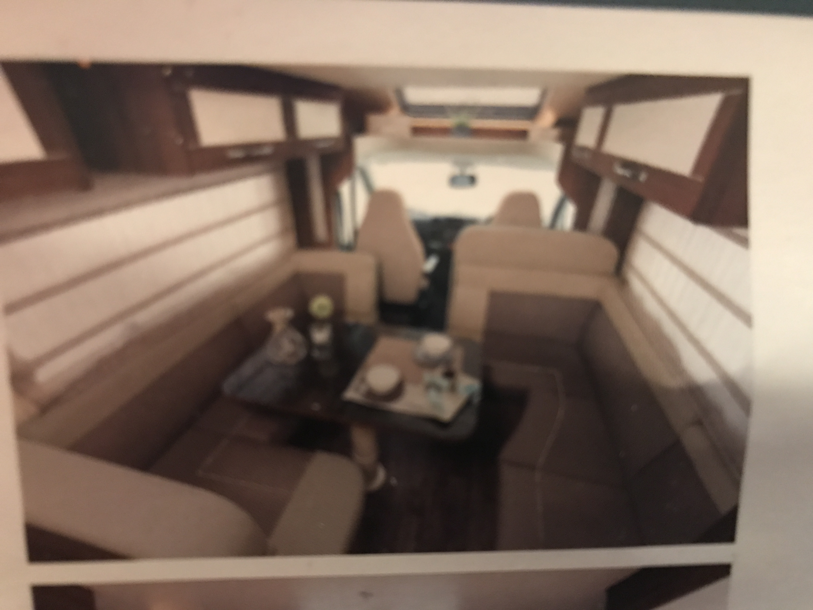
-
Double drop bed bed half way down
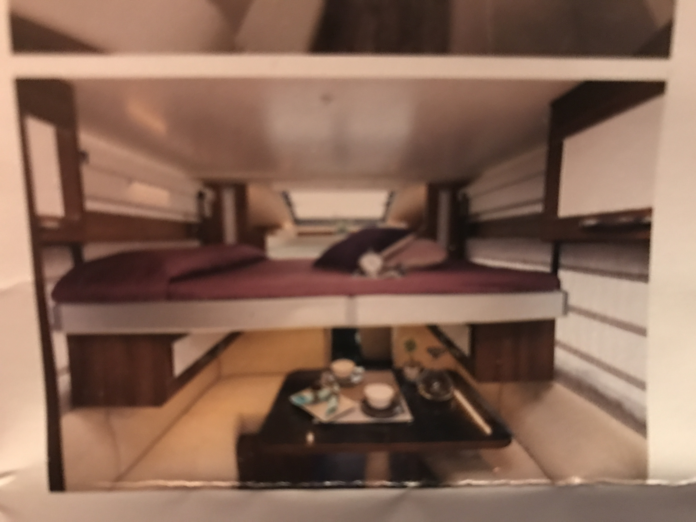
-
Double drop down bed fully up
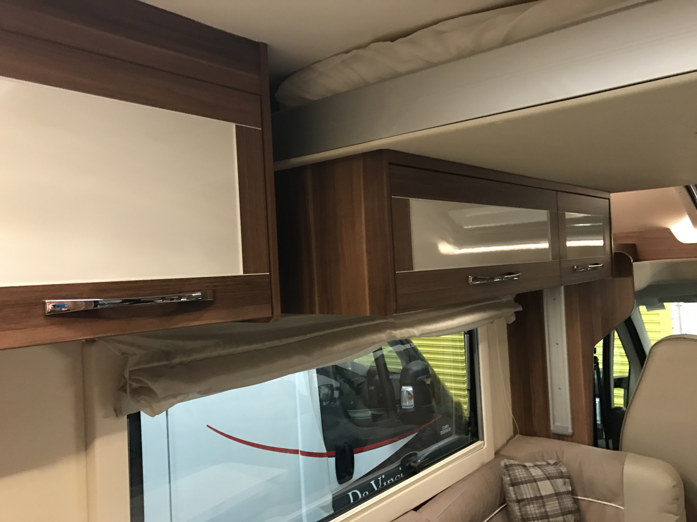
-
Rear bunk beds
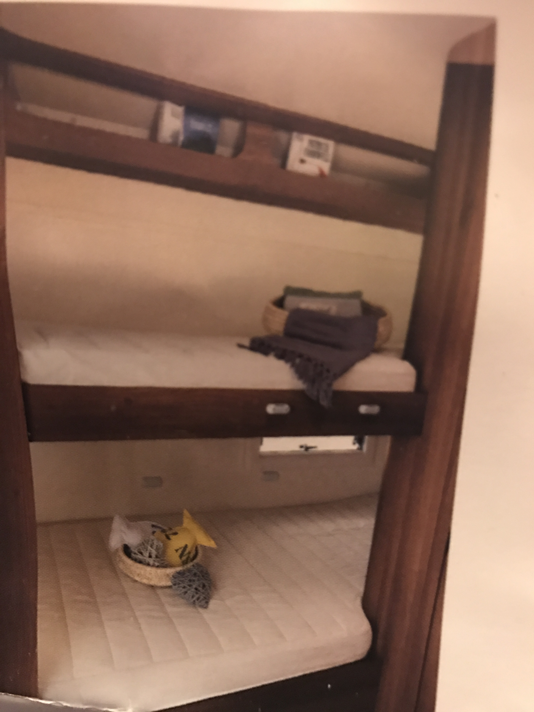
-
Fridge and small freezer box
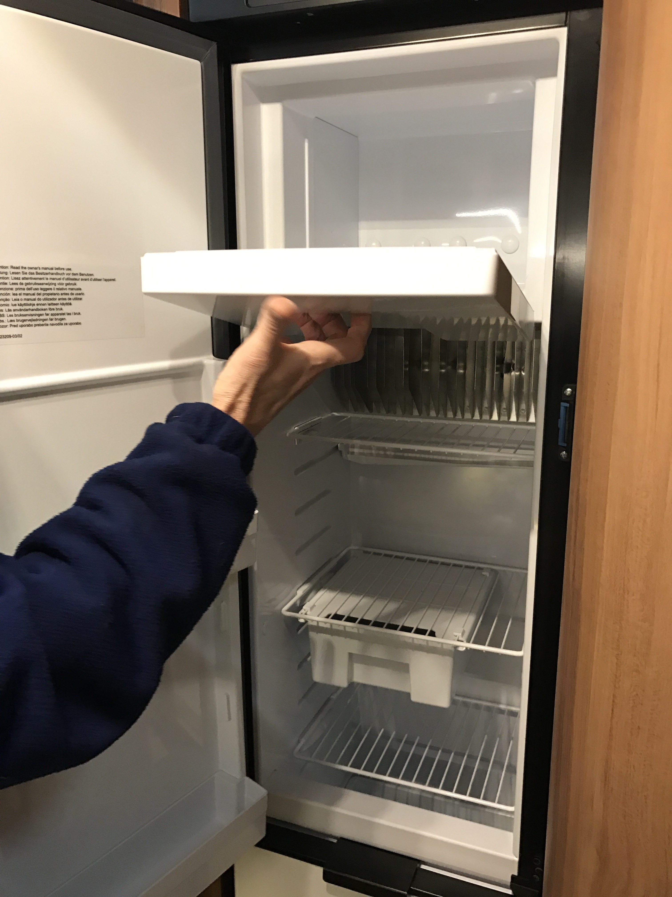
-
Cool box under the fridge
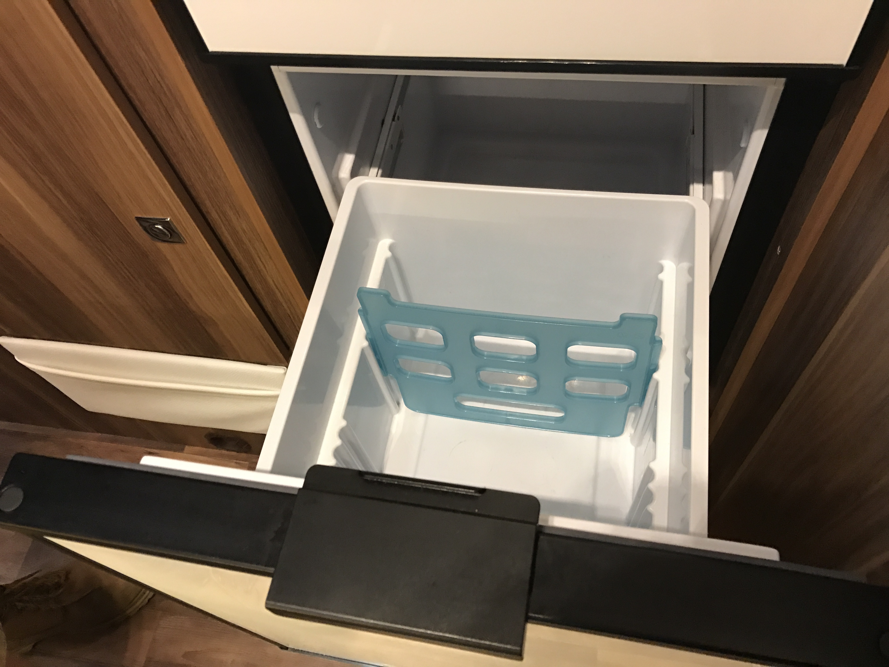
-
Cooker
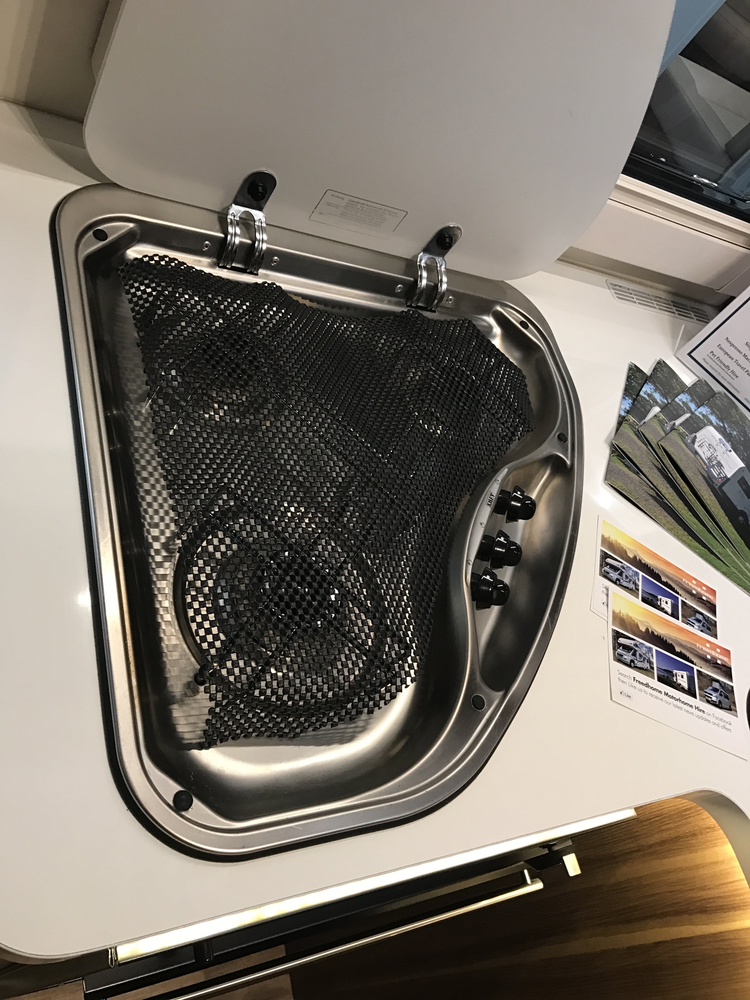
-
Oven
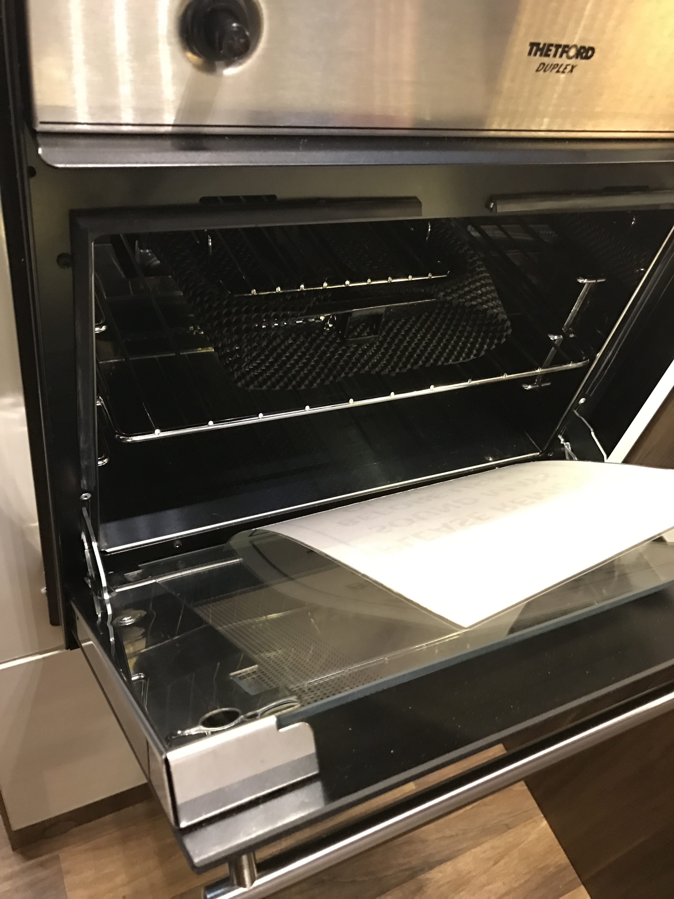
-
Cutlery drawer
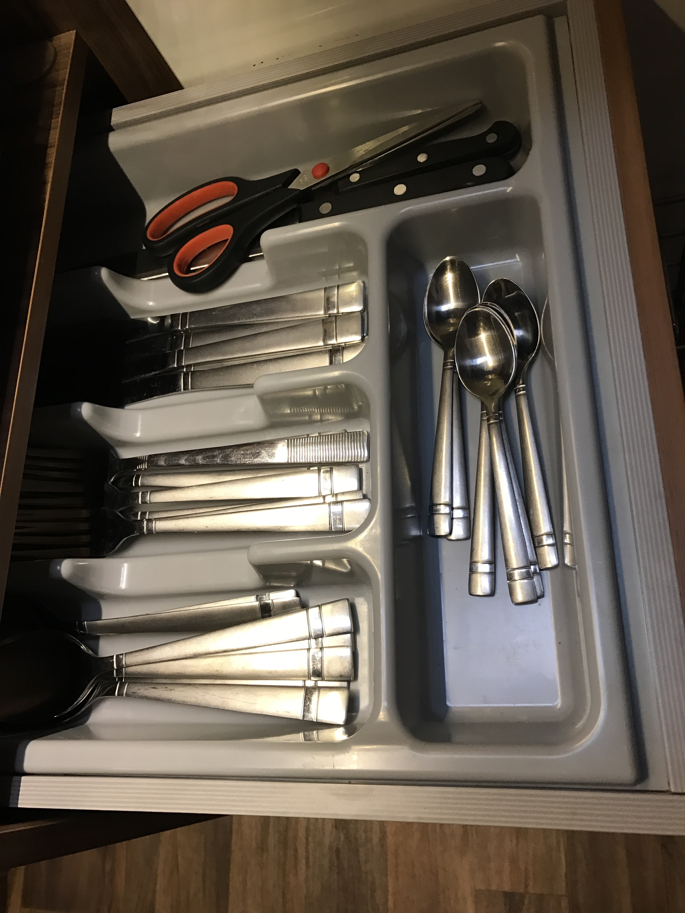
-
Sink in bathroom
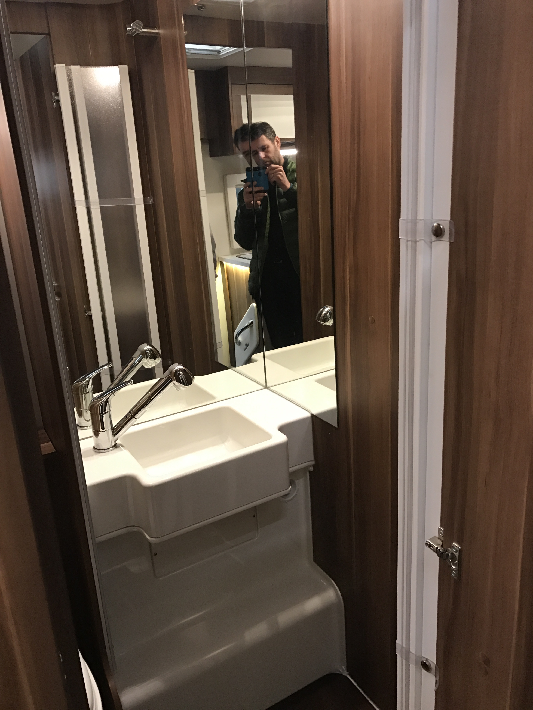
-
Toilet
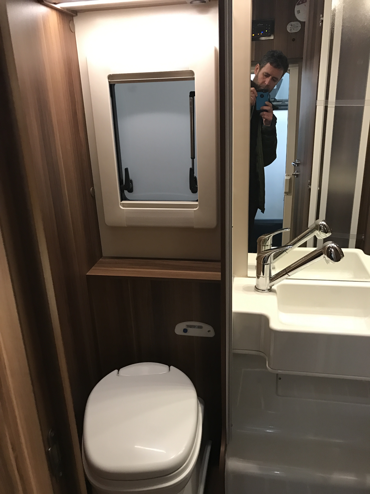